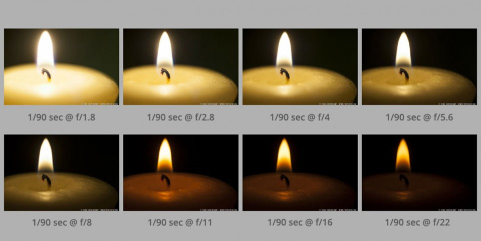

A camera takes a photograph by exposing a digital sensor (or a piece of film) to light. The shutter is simply a barrier that keeps light out when you’re not taking a photo. Pressing the button at the top of the camera (it’s actually called the shutter release) opens the shutter, and when the shutter is open, an image is recorded. When the shutter closes, the camera stops recording. The shutter speed, then, is just how long that barrier stays open to let light into the image. Shutter speed is how long an image is exposed to light — it can be milliseconds, or even minutes. As one of three elements that affect how light or dark an image is (called exposure), understanding shutter speed is essential to taking full creative control of the camera. If the shutter is left open for a long time, the lens will let in a lot of light, and unless you are shooting a very dark scene, the image will be too bright, or overexposed. If the shutter speed is too quick, on the other hand, the photograph will be too dark.
